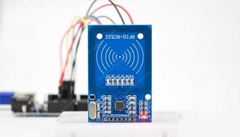

Also on RadioProg
Взаимодействие ESP8266 NodeMCU с …
Вы когда-нибудь хотели, чтобы датчики были разбросаны по всему …
0.6 – Интегрированная среда разработки (IDE)
Вводная статья в серии «Изучаем C++», в которой мы готовимся к …
Глава 1. Ваша первая программа на Python
Первая глава книги Марка Пилгрима «Погружение в Python 3», в которой на …
Получение даты и времени от NTP …
Иногда в проектах IoT важной составляющей является точность …
Как работает датчик газа/дыма MQ-2? И …
Рассмотрим принцип действия датчика газа/дыма MQ-2 и …

Что такое RFID? Как это работает? …
Рассмотрим технологию радиочастотной идентификации RFID, …
Как работают датчики температуры и …
Датчики температуры и влажности DHT11, DHT22/AM2302 от …
Как разработать прецизионный …
В данной статье обсуждается схема источника тока, …